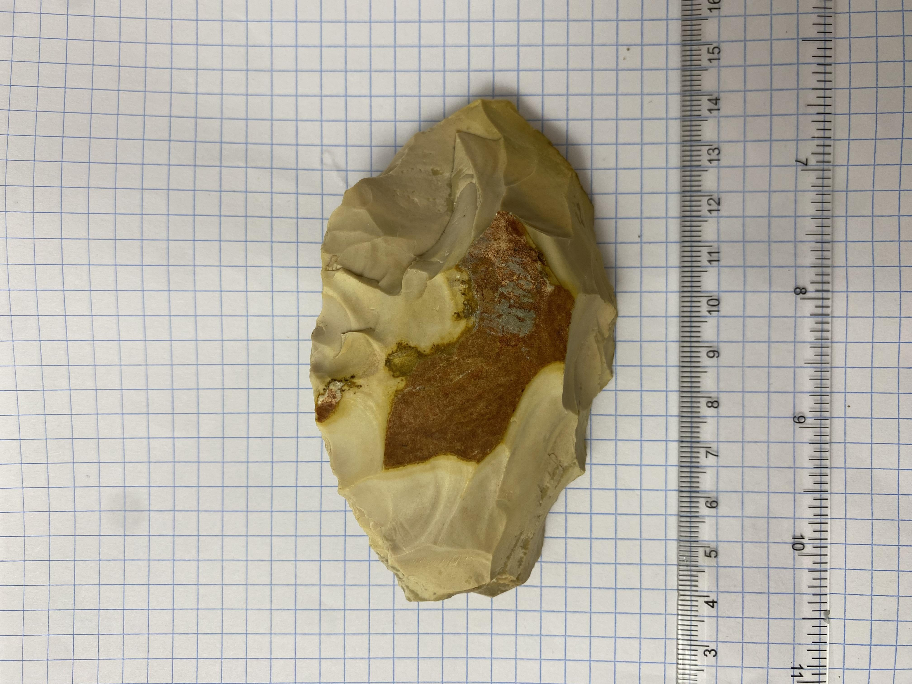

Anthony Lagoon
Barkly Tableland, Northern Territory
Traditional Custodians: The Wampaya People
About the People
The Wambaya people are the custodians of the central Barkly Tableland. Historically traversing the expansive inland plains and seasonal lakes, they possess unique linguistic traditions (the Wambaya language) and have maintained their deep cultural footprint across the sprawling pastoral heartlands of the Northern Territory.
Located across the immense flat plains of the Barkly Tableland, Anthony Lagoon Station was established in 1889 as a critical watering point for drovers. Throughout the 20th century, Aboriginal peoples - including the Wambaia, Garawa, Goodanji, and Yanula - served as the operational backbone of these outback cattle stations. Unsurveyed archaeological remnants, such as stone tool scatters left from nomadic migration across the tablelands, remain heavily protected under the Northern Territory Heritage Act 2011.

Archived Artefacts
Artefacts originating from this region have been historically catalogued, including an incredibly rare Aboriginal grinding stone found near Anthony Lagoon bore.
View Artefacts in Gallery →A Note on Artefact Protection
Under strict local and federal laws, all Aboriginal archaeological places and objects are now definitively protected. Visitors encountering unknown potential artefacts in the wild must invariably leave them undisturbed and report them to relevant Traditional Owner groups or State Heritage Branches.
Research Sources & Citations: